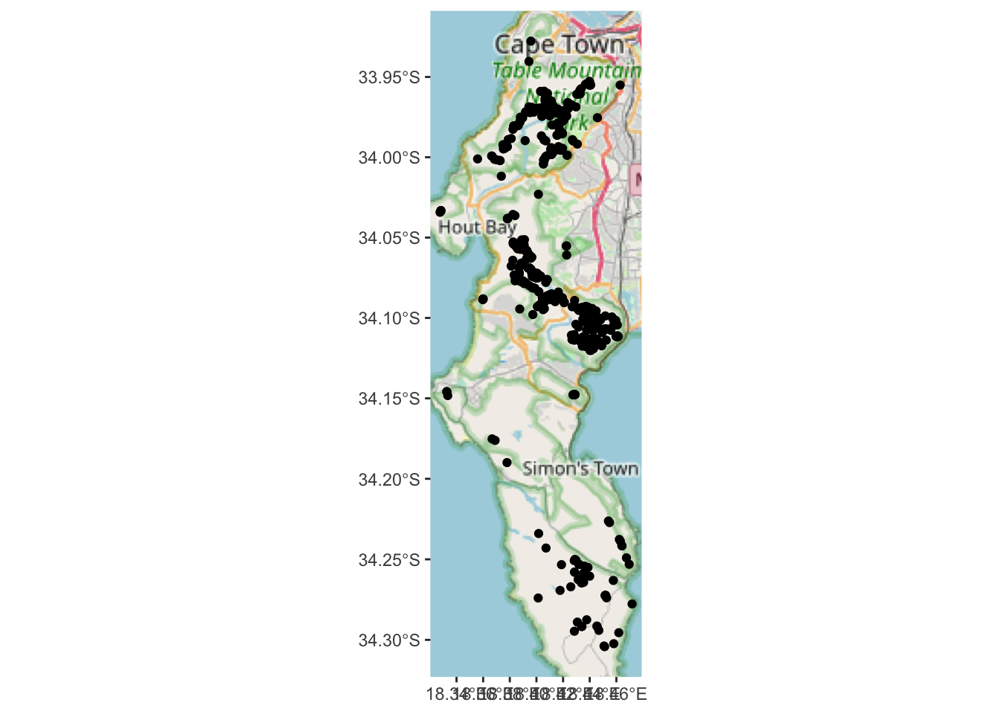
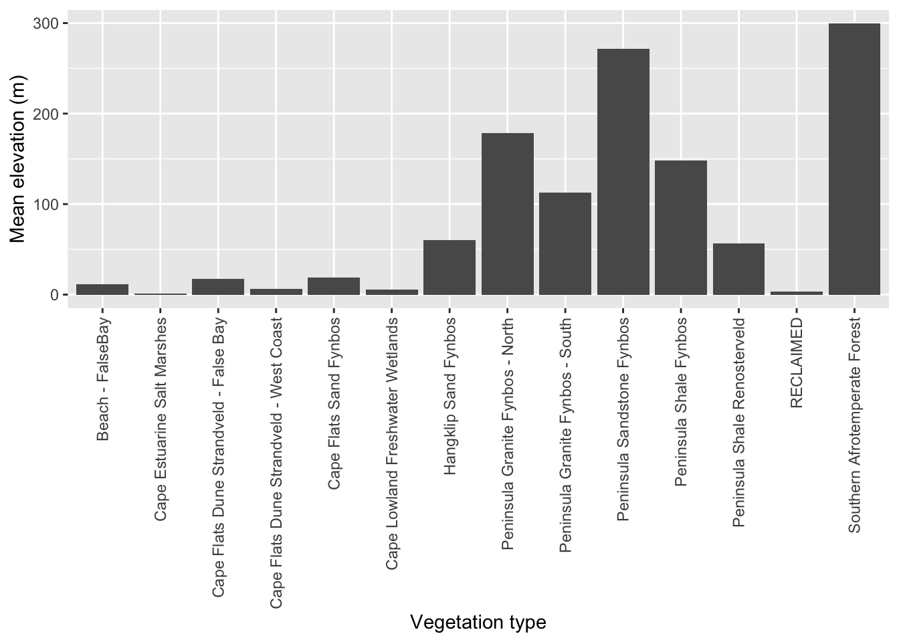
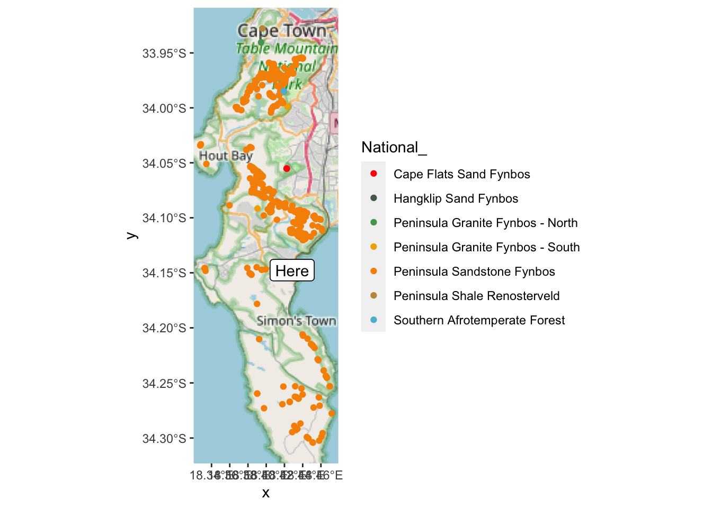
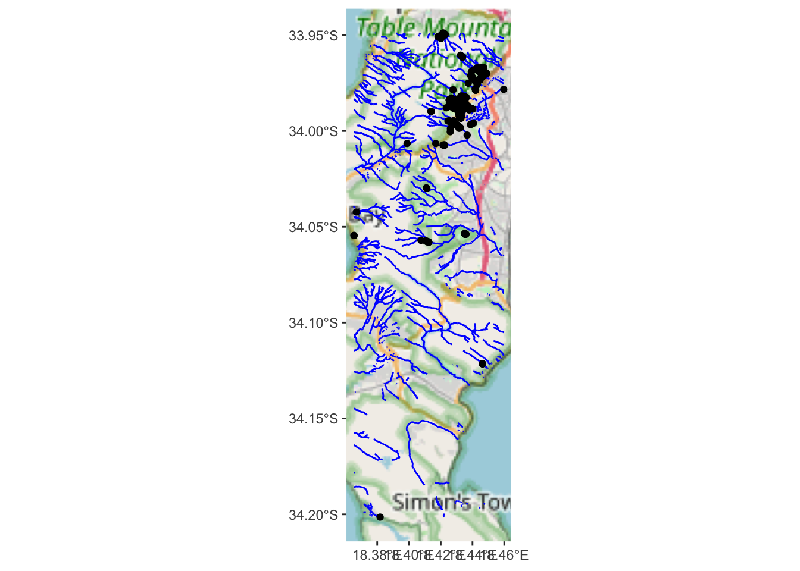

7 Vector GIS operations in R
7.1 Case study and demo datasets
Ok, for demonstrating some of the many GIS operations R can perform we will be using data from one of my favourite study areas, the Cape Peninsula.
The datasets we will use, some of their properties and where to source them are tabled below. You can also download them as one (40MB) .zip file here, because the City of Cape Town updates the files from time to time and small changes in format, naming etc break the code to come. Please do not use the version from the .zip file in any real analyses etc, because I can make no guarantees about their accuracy etc. It is best to use the latest version from the links in the table.
| Name | Data source | Data model | Geometry type | File format |
|---|---|---|---|---|
| Localities | iNaturalist | Vector | Point | Data frame from API |
| Watercourses | City of Cape Town | Vector | Line | ESRI shapefile |
| Vegetation Types (historical) | City of Cape Town | Vector | Polygon | ESRI shapefile |
| Vegetation Types (remnants) | City of Cape Town | Vector | Polygon | ESRI shapefile |
| Elevation | City of Cape Town | Raster | Raster | MapServer |
If you’d like to follow along and run the analyses that follow, please download the datasets. There’s no need to download the iNaturalist data as we’ll download it directly from R.
For installing R and the required packages see section 1.2.
7.2 Reading and writing
sf has a one-size-fits-all approach in that most functions can be applied to most different data types (point, line, polygon, etc) or, in the case of reading and writing, file formats. To read data the function you want is st_read().
You’ll note that most of the sf functions begin with “st_” - this stands for “spatial and temporal” and is the same in some other GIS like PostGIS.
Let’s try to read in some data with st_read():
NOTE: if you’re trying any of the read/write code at home, you’ll need to set the file path to where you put the data and want the outputs on your local machine. You can also use
?setwdto simplify this. If you are on Windows, make sure to change the backslashes to either double backslashes or forward slashes “/”.
## Reading layer `Vegetation_Indigenous' from data source
## `/Users/jasper/GIT/spatial-r/data/cape_peninsula/veg/Vegetation_Indigenous.shp'
## using driver `ESRI Shapefile'
## Simple feature collection with 1325 features and 5 fields
## Geometry type: POLYGON
## Dimension: XY
## Bounding box: xmin: -63972.95 ymin: -3803535 xmax: 430.8125 ymax: -3705149
## Projected CRS: WGS_1984_Transverse_MercatorThis has successfully read in the data and given us a summary of some of its properties. Note the “Projected CRS” WGS_1984_Transverse_Mercator, so it is Transverse Mercator (TM), using the WGS84 datum, but it hasn’t told us what line of longitude it’s centred on, which is an essential feature of any TM projection.
The first thing you should do when interrogating any spatial data is to check the coordinate reference system (CRS). In sf, you do this with the function st_crs, like so:
## Coordinate Reference System:
## User input: WGS_1984_Transverse_Mercator
## wkt:
## PROJCRS["WGS_1984_Transverse_Mercator",
## BASEGEOGCRS["WGS 84",
## DATUM["Hartebeesthoek94",
## ELLIPSOID["WGS 84",6378137,298.257223563,
## LENGTHUNIT["metre",1]],
## ID["EPSG",6148]],
## PRIMEM["Greenwich",0,
## ANGLEUNIT["Degree",0.0174532925199433]]],
## CONVERSION["unnamed",
## METHOD["Transverse Mercator",
## ID["EPSG",9807]],
## PARAMETER["Latitude of natural origin",0,
## ANGLEUNIT["Degree",0.0174532925199433],
## ID["EPSG",8801]],
## PARAMETER["Longitude of natural origin",19,
## ANGLEUNIT["Degree",0.0174532925199433],
## ID["EPSG",8802]],
## PARAMETER["Scale factor at natural origin",1,
## SCALEUNIT["unity",1],
## ID["EPSG",8805]],
## PARAMETER["False easting",0,
## LENGTHUNIT["metre",1],
## ID["EPSG",8806]],
## PARAMETER["False northing",0,
## LENGTHUNIT["metre",1],
## ID["EPSG",8807]]],
## CS[Cartesian,2],
## AXIS["(E)",east,
## ORDER[1],
## LENGTHUNIT["metre",1,
## ID["EPSG",9001]]],
## AXIS["(N)",north,
## ORDER[2],
## LENGTHUNIT["metre",1,
## ID["EPSG",9001]]]]This shows us the CRS as a WKT string and looks very complicated… Essentially there are three components to it:
BASEGEOGCRS- the geographic (or unprojected) CRSCONVERSION- the projection, which includes a lot of information, but essentially tells us it’s Transverse Mercator, and the"Longitude of natural origin",19indicates that it is centred on the 19 degree line of longitude (i.e. we’re dealing with Transverse Mercator Lo19)CS- the cartesian axes, showing that we’re dealing with axes oriented to North and East and units of metres
TM Lo19 is a good projection for most calculations at this scale (and on this line of longitude). If you’re using Transverse Mercator, always make sure it is set for your closest “odd” line of longitude (i.e. Lo19, Lo21, Lo23)!
More on working with coordinate reference systems in see section 7.11.
Let’s have a closer look at the data:
## [1] "sf" "data.frame"It is an object of two different “classes”, a data.frame, which is an R object class you should be familiar with, and class sf, which is the native class for the sf library.
The nice thing about being both classes is it means you can apply the functions built for either class, such as head, a commonly used function for looking at the first few rows of a dataframe.
## Simple feature collection with 6 features and 5 fields
## Geometry type: POLYGON
## Dimension: XY
## Bounding box: xmin: -51324.95 ymin: -3732075 xmax: -35653.98 ymax: -3718136
## Projected CRS: WGS_1984_Transverse_Mercator
## AREA_HCTR PRMT_MTR National_ Subtype Community
## 1 1807.5183616 24763.8073 Atlantis Sand Fynbos on marine-derived acid sands Need to Find Out
## 2 2.1437754 609.5892 Atlantis Sand Fynbos on marine-derived acid sands Need to Find Out
## 3 0.2134855 185.5566 Atlantis Sand Fynbos on marine-derived acid sands Need to Find Out
## 4 2.8602421 652.1671 Atlantis Sand Fynbos on marine-derived acid sands Need to Find Out
## 5 0.5468058 336.8006 Atlantis Sand Fynbos on marine-derived acid sands Need to Find Out
## 6 0.4172046 259.7772 Atlantis Sand Fynbos on marine-derived acid sands Need to Find Out
## geometry
## 1 POLYGON ((-48203.88 -372294...
## 2 POLYGON ((-36676.72 -371974...
## 3 POLYGON ((-35891.46 -371837...
## 4 POLYGON ((-35750.07 -371847...
## 5 POLYGON ((-35823.89 -371817...
## 6 POLYGON ((-35929.18 -371824...Note there are 5 attribute columns (the attribute table as you would see in most GIS software) and a 6th geometry column. All sf objects have a geometry column. This is where it stores the geometry - i.e. the point, line, polygon etc - associated with each row of attribute data.
To write data with sf you use st_write(), like so:
## Writing layer `Vegetation_Indigenous_duplicate' to data source
## `data/cape_peninsula/veg/Vegetation_Indigenous_duplicate.shp' using driver `ESRI Shapefile'
## Writing 1325 features with 5 fields and geometry type Polygon.Note that I added , append = FALSE because in my case it I want it to overwrite an existing file by the same name, and this command suppresses the warning it would usually give.
## [1] TRUEConfirms that the file exists, so it has written a file out successfully.
Note that the function recognised that I wanted to write out an ESRI shapefile from the .shp file extension I provided. You can set the file type using the driver = setting in st_write(). Try st_drivers() for the list of file types supported.
7.3 Basic plotting
As with other data types in R (and perhaps even more so with spatial data), you can really go to town with plotting. I’m only going to show you enough to be able to interrogate your data. Making it look pretty is a week-long course or more in its own right. Check out the “Making maps with R” chapter in Lovelace et al’s online book Geocomputation with R for a good start. You could also check out library(tmap) for plotting thematic maps or library(mapview) for interactive maps.
The easiest way to plot datasets in R is often a bad thing to do when working with spatial datasets!

Fortunately, in this case the dataset isn’t too big, but often you’ll either be overwhelmed with plots or your computer will crash…
Why 5 plots and not one? This is because sf wants to plot the properties of each attribute in the attribute table. Fortunately, there were only 5, but there could have been hundreds! You can select the one you want with indexing like so:

These are the National Vegetation Types for the City of Cape Town municipality.
You’ll note that we’re using the base R graphics functions. I mentioned before that sf integrates well with the Tidyverse, so this could also be plotted like so:
library(tidyverse) #calls ggplot2 and other Tidyverse packages together
ggplot() +
geom_sf(data=veg, aes(fill = `National_`))
That’s better for the legend, but now we’ve squashed the map. Let’s narrow in on the Cape Peninsula for convenience.
7.4 Cropping
Here we’ll apply the function st_crop(). To use the function you need an object to crop, and an extent or bounding box to crop to. sf is clever, and you can set the extent by giving it another object who’s extent you’d like to match (check the bounding box given when we read in the data earlier).
We don’t have a second object in this case, so we have to provide a “numeric vector with named elements xmin, ymin, xmax and ymax”, like so:
#Make a vector with desired coordinates in metres according to TM Lo19
ext <- c(-66642.18, -3809853.29, -44412.18, -3750723.29)
ext## [1] -66642.18 -3809853.29 -44412.18 -3750723.29## xmin ymin xmax ymax
## -66642.18 -3809853.29 -44412.18 -3750723.29Now we can feed that into st_crop
## Warning: attribute variables are assumed to be spatially constant throughout all geometries
Better?
Note that in this case I gave it the coordinates in TM Lo19. These are not always easy to work out, so you may want to create an extent using Lat/Long and then project it to TM Lo19 before cropping. You can do this like so:
myextent <- st_sf(a = 1:2, geom = st_sfc(st_point(c(18,-33)), st_point(c(19,-34))), crs = 4326)
myextent <- st_transform(myextent, crs = "+proj=tmerc +lat_0=0 +lon_0=19 +k=1 +x_0=0 +y_0=0 +ellps=WGS84 +towgs84=0,0,0,0,0,0,0 +units=m +no_defs")
# And then run veg <- st_crop(veg, myextent)Ok. Moving on. But what about the silly splits like Peninsula Granite Fynbos - North/South and Cape Flats Dune Strandveld - West Coast/False Bay in the figure above.
Which ones do I mean?
7.5 Select and subset by attribute
Let’s select them from the attribute table and plot them.
#Make a vector of the veg types we want
split_veg <- c("Peninsula Granite Fynbos - North",
"Peninsula Granite Fynbos - South",
"Cape Flats Dune Strandveld - West Coast",
"Cape Flats Dune Strandveld - False Bay")
#Use base R indexing to select attributes
vegsub <- veg[which(veg$National_ %in% split_veg),]
#Plot
ggplot() + geom_sf(data=vegsub, aes(fill = `National_`))
Or tidyverse…
#Using tidyverse piping to filter and plot
veg %>%
filter(National_ %in% split_veg) %>%
ggplot() +
geom_sf(aes(fill = `National_`))
Ok. What if we decided we don’t want them split?
7.6 Combine classes and dissolve by attribute
We can just rename them in appropriate column in the attribute table…
vegsub$National_ <- str_replace_all(vegsub$National_,
c("Peninsula Granite Fynbos - North" = "Peninsula Granite Fynbos",
"Peninsula Granite Fynbos - South" = "Peninsula Granite Fynbos",
"Cape Flats Dune Strandveld - West Coast" = "Cape Flats Dune Strandveld",
"Cape Flats Dune Strandveld - False Bay" = "Cape Flats Dune Strandveld"))
ggplot() + geom_sf(data=vegsub, aes(fill = `National_`))
Nice, but from the polygon boundaries we see that there are a number of adjacent polygons (i.e. they have shared boundaries) that are of the same veg type. We can “dissolve” and plot it without the unwanted boundaries using summarize():

Ok… I think we’ve flogged that horse as far as it’ll go for now. Let’s bring in another dataset. How about points?
7.7 Calling iNaturalist locality (point) data from R
A very cool feature of iNaturalist is that the team at rOpenSci have built a great R package for interfacing with it directly, called rinat!
Let’s get all the records we can for the King Protea (Protea cynaroides).
library(rinat)
#Call the data directly from iNat
pc <- get_inat_obs(taxon_name = "Protea cynaroides",
bounds = c(-35, 18, -33.5, 18.5),
maxresults = 1000)
#View the first few rows of data
head(pc)## scientific_name datetime description
## 1 Protea cynaroides 2024-02-17 15:19:32 +0200
## 2 Protea cynaroides 2024-02-18 11:06:57 +0200
## 3 Protea cynaroides 2024-02-18 13:29:11 +0200
## 4 Protea cynaroides 2024-02-18 07:50:17 +0200
## 5 Protea cynaroides 2024-02-17 11:08:16 +0200
## 6 Protea cynaroides 2024-02-17 11:35:46 +0200
## place_guess latitude longitude tag_list
## 1 Wynberg NU (2), Cape Town, 7824, South Africa -33.98363 18.41677
## 2 Table Mountain (Nature Reserve), Cape Town, South Africa -33.96553 18.41059
## 3 Table Mountain National Park, ZA-WC-CT, ZA-WC, ZA -33.96780 18.42637
## 4 Table Mountain National Park, Cape Town, WC, ZA -34.00400 18.40527
## 5 Table Mountain National Park, ZA-WC-CT, ZA-WC, ZA -34.06891 18.39379
## 6 Silver Mine (Nature Reserve), Cape Town, South Africa -34.11639 18.44388
## common_name url
## 1 King Protea https://www.inaturalist.org/observations/199907030
## 2 King Protea https://www.inaturalist.org/observations/199880775
## 3 King Protea https://www.inaturalist.org/observations/199706446
## 4 King Protea https://www.inaturalist.org/observations/199658012
## 5 King Protea https://www.inaturalist.org/observations/199597143
## 6 King Protea https://www.inaturalist.org/observations/199583340
## image_url user_login
## 1 https://static.inaturalist.org/photos/352604636/medium.jpeg sonjastock
## 2 https://inaturalist-open-data.s3.amazonaws.com/photos/352554820/medium.jpeg susanthescout
## 3 https://inaturalist-open-data.s3.amazonaws.com/photos/352228494/medium.jpeg dryfveer
## 4 https://inaturalist-open-data.s3.amazonaws.com/photos/352137332/medium.jpg cajacobs
## 5 https://inaturalist-open-data.s3.amazonaws.com/photos/352016448/medium.jpeg sashie889
## 6 https://inaturalist-open-data.s3.amazonaws.com/photos/351990638/medium.jpeg dryfveer
## id species_guess iconic_taxon_name taxon_id num_identification_agreements
## 1 199907030 Giant Protea Plantae 132848 2
## 2 199880775 Giant Protea Plantae 132848 3
## 3 199706446 King Protea Plantae 132848 1
## 4 199658012 King Protea Plantae 132848 2
## 5 199597143 Giant Protea Plantae 132848 2
## 6 199583340 King Protea Plantae 132848 0
## num_identification_disagreements observed_on_string observed_on
## 1 0 2024-02-17 15:19:32 2024-02-17
## 2 0 2024-02-18 11:06:57 2024-02-18
## 3 0 2024-02-18 13:29:11 2024-02-18
## 4 0 2024-02-18 07:50:17+02:00 2024-02-18
## 5 0 2024-02-17 11:08:16 2024-02-17
## 6 0 2024-02-17 11:35:46 2024-02-17
## time_observed_at time_zone positional_accuracy public_positional_accuracy
## 1 2024-02-17 13:19:32 UTC Pretoria NA NA
## 2 2024-02-18 09:06:57 UTC Pretoria 4 4
## 3 2024-02-18 11:29:11 UTC Pretoria 12 12
## 4 2024-02-18 05:50:17 UTC Pretoria 4 4
## 5 2024-02-17 09:08:16 UTC Pretoria 8 8
## 6 2024-02-17 09:35:46 UTC Pretoria 4 4
## geoprivacy taxon_geoprivacy coordinates_obscured positioning_method positioning_device
## 1 <NA> open false gps gps
## 2 <NA> open false gps gps
## 3 <NA> open false
## 4 <NA> open false
## 5 <NA> open false
## 6 <NA> open false
## user_id user_name created_at updated_at quality_grade
## 1 2589781 Sonja Stock 2024-02-20 16:41:14 UTC 2024-02-20 20:56:47 UTC research
## 2 1495441 Susan Gammon 2024-02-20 09:25:06 UTC 2024-02-20 11:39:37 UTC research
## 3 2173153 Santie Gouws 2024-02-18 19:22:46 UTC 2024-02-18 19:23:23 UTC research
## 4 7637674 2024-02-18 10:26:50 UTC 2024-02-19 10:31:13 UTC research
## 5 5301909 2024-02-17 20:25:20 UTC 2024-02-19 10:46:22 UTC research
## 6 2173153 Santie Gouws 2024-02-17 18:19:29 UTC 2024-02-17 18:21:24 UTC needs_id
## license sound_url oauth_application_id captive_cultivated
## 1 NA 2 false
## 2 CC-BY-NC NA 2 false
## 3 CC-BY-NC NA 2 false
## 4 CC-BY-NC NA 3 false
## 5 CC-BY-NC NA 2 false
## 6 CC-BY-NC NA 2 false#Filter returned observations by a range of column attribute criteria
pc <- pc %>% filter(positional_accuracy<46 &
latitude<0 &
!is.na(latitude) &
captive_cultivated == "false" &
quality_grade == "research")
class(pc)## [1] "data.frame"Ok, so this is a dataframe with lat/long data, but it isn’t registered as an object with spatial attributes (i.e. geometries).
7.8 Converting a dataframe into a spatial object
To make it an object of class(sf) we use the function st_as_sf().
#Make the dataframe a spatial object of class = "sf"
pc <- st_as_sf(pc, coords = c("longitude", "latitude"), crs = 4326)Note that I had to define the CRS!!! I defined it to be Geographic WGS84, using the EPSG code in this case. Recall the difference between defining and CRS and projecting of transforming the CRS as discussed in yesterday’s notes…
## [1] "sf" "data.frame"## [1] "scientific_name" "datetime"
## [3] "description" "place_guess"
## [5] "tag_list" "common_name"
## [7] "url" "image_url"
## [9] "user_login" "id"
## [11] "species_guess" "iconic_taxon_name"
## [13] "taxon_id" "num_identification_agreements"
## [15] "num_identification_disagreements" "observed_on_string"
## [17] "observed_on" "time_observed_at"
## [19] "time_zone" "positional_accuracy"
## [21] "public_positional_accuracy" "geoprivacy"
## [23] "taxon_geoprivacy" "coordinates_obscured"
## [25] "positioning_method" "positioning_device"
## [27] "user_id" "user_name"
## [29] "created_at" "updated_at"
## [31] "quality_grade" "license"
## [33] "sound_url" "oauth_application_id"
## [35] "captive_cultivated" "geometry"
Great! We got lots of points, but without a base layer its very difficult to tell where exactly these are?
7.9 Adding basemaps to plots
There are lots of ways to make the basemap from data objects etc that we can plot our points over, but an easy way is to pull in tiles from Open Street Maps and plot our points on those.
library(rosm)
library(ggspatial)
ggplot() +
annotation_map_tile(type = "osm", progress = "none") +
geom_sf(data=pc)
Note that there are quite a few base layer/tile options that can be set with type = "". Try rosm::osm.types() to see them all.
This is better than nothing, but the scale of the map is too small to really see where the plants actually are. It would be much easier if we could look at the data interactively?
7.10 Interactive maps with leaflet and mapview
We can generate interactive maps by calling the leaflet mapserver using wrapper functions in the leaflet R package written for this purpose.
NOTE: If you can’t get leaflet to work it is probably a CRS problem. Your data need to be in Geographic or Web Mercator
library(leaflet)
library(htmltools)
leaflet() %>%
# Add default OpenStreetMap map tiles
addTiles(group = "Default") %>%
# Add our points
addCircleMarkers(data = pc,
group = "Protea cynaroides",
radius = 3,
color = "green") Much better!
Strange, but even though we filtered our iNaturalist records for captive_cultivated == "false" we still have a number of observations that appear to be in people’s gardens.
Let this serve as a warning to be wary of all data! Always do “common-sense-checks” on your data and the outputs of your analyses!!!
One way to do common sense checks with interactive plots is to add popup labels that allow you to inspect the data. See here to do this with library(leaflet), but here’s an example with library(mapview).
library(mapview)
library(leafpop)
mapview(pc,
popup =
popupTable(pc,
zcol = c("user_login", "captive_cultivated", "url")))Nice, but we can’t click on the URL, we have to copy and paste it. Fortunately, with a little html formatting we can make them live links.
lpc <- pc %>%
mutate(click_url = paste("<b><a href='", url, "'>Link to iNat observation</a></b>"))
mapview(pc,
popup =
popupTable(lpc,
zcol = c("user_login", "captive_cultivated", "click_url")))7.11 Reprojecting
One way to drastically reduce the number of cultivated records is to overlay the localities (points) with the remaining extent of the vegetation types (i.e. anything that is not in natural vegtation is likely to be cultivated). Let’s try that…
#Get the remnants layer
vegr <- st_read("data/cape_peninsula/veg/Vegetation_Indigenous_Remnants.shp")## Reading layer `Vegetation_Indigenous_Remnants' from data source
## `/Users/jasper/GIT/spatial-r/data/cape_peninsula/veg/Vegetation_Indigenous_Remnants.shp'
## using driver `ESRI Shapefile'
## Simple feature collection with 3428 features and 7 fields
## Geometry type: POLYGON
## Dimension: XY
## Bounding box: xmin: -63951.23 ymin: -3803532 xmax: 420.7595 ymax: -3705506
## Projected CRS: WGS_1984_Transverse_Mercator## Error in geos_op2_geom("intersection", x, y, ...): st_crs(x) == st_crs(y) is not TRUEOops! The Coordinate Reference Systems are different! We will need to reproject one of the two datasets…
Let’s see what CRS are currently set:
## Coordinate Reference System:
## User input: EPSG:4326
## wkt:
## GEOGCRS["WGS 84",
## ENSEMBLE["World Geodetic System 1984 ensemble",
## MEMBER["World Geodetic System 1984 (Transit)"],
## MEMBER["World Geodetic System 1984 (G730)"],
## MEMBER["World Geodetic System 1984 (G873)"],
## MEMBER["World Geodetic System 1984 (G1150)"],
## MEMBER["World Geodetic System 1984 (G1674)"],
## MEMBER["World Geodetic System 1984 (G1762)"],
## MEMBER["World Geodetic System 1984 (G2139)"],
## ELLIPSOID["WGS 84",6378137,298.257223563,
## LENGTHUNIT["metre",1]],
## ENSEMBLEACCURACY[2.0]],
## PRIMEM["Greenwich",0,
## ANGLEUNIT["degree",0.0174532925199433]],
## CS[ellipsoidal,2],
## AXIS["geodetic latitude (Lat)",north,
## ORDER[1],
## ANGLEUNIT["degree",0.0174532925199433]],
## AXIS["geodetic longitude (Lon)",east,
## ORDER[2],
## ANGLEUNIT["degree",0.0174532925199433]],
## USAGE[
## SCOPE["Horizontal component of 3D system."],
## AREA["World."],
## BBOX[-90,-180,90,180]],
## ID["EPSG",4326]]So the points are Geographic, with no projected CRS CONVERSION.
## Coordinate Reference System:
## User input: WGS_1984_Transverse_Mercator
## wkt:
## PROJCRS["WGS_1984_Transverse_Mercator",
## BASEGEOGCRS["WGS 84",
## DATUM["Hartebeesthoek94",
## ELLIPSOID["WGS 84",6378137,298.257223563,
## LENGTHUNIT["metre",1]],
## ID["EPSG",6148]],
## PRIMEM["Greenwich",0,
## ANGLEUNIT["Degree",0.0174532925199433]]],
## CONVERSION["unnamed",
## METHOD["Transverse Mercator",
## ID["EPSG",9807]],
## PARAMETER["Latitude of natural origin",0,
## ANGLEUNIT["Degree",0.0174532925199433],
## ID["EPSG",8801]],
## PARAMETER["Longitude of natural origin",19,
## ANGLEUNIT["Degree",0.0174532925199433],
## ID["EPSG",8802]],
## PARAMETER["Scale factor at natural origin",1,
## SCALEUNIT["unity",1],
## ID["EPSG",8805]],
## PARAMETER["False easting",0,
## LENGTHUNIT["metre",1],
## ID["EPSG",8806]],
## PARAMETER["False northing",0,
## LENGTHUNIT["metre",1],
## ID["EPSG",8807]]],
## CS[Cartesian,2],
## AXIS["(E)",east,
## ORDER[1],
## LENGTHUNIT["metre",1,
## ID["EPSG",9001]]],
## AXIS["(N)",north,
## ORDER[2],
## LENGTHUNIT["metre",1,
## ID["EPSG",9001]]]]The remnants of vegetation types are in Transverse Mercator Lo19, just like the dataset of the historical extent of the veg types we were working with earlier.
In this case, either CRS is fine for our purposes, but let’s stick with Transverse Mercator Lo19, because it’ll be useful later. For this we need to project the points like so:
Note that I fed it the CRS from vegr. This guarantees that they’ll be the same, even if we misidentified what the actual CRS is…
NOTE: Sometimes you will
7.12 Intersecting points and polygons
…and now we can try to intersect the points and polygons again…
First lets see how many rows and columns the point data before the intersection:
## [1] 661 36And after the intersection?
## Warning: attribute variables are assumed to be spatially constant throughout all geometries## [1] 648 43Less rows, but more columns! Two things have happened:
- The attribute data from the polygons in
vegrintersected by the points inpchave been added to the attribute table inpc! - All points that do not intersect the polygons in
vegrwere dropped (i.e. those that were recorded outside the remaining extent of natural vegetation).
Let’s have a look

Yup, the localities in suburbia are gone… The map is a bit bland though. How about we use our “new information” about which vegetation types the observations occur in to colour or label the points on the map?
7.13 Colour or label points
First, let’s add colour:
library(wesanderson)
pal <- wes_palette("Darjeeling1", 7, type = "continuous")
ggplot() +
annotation_map_tile(type = "osm", progress = "none") +
geom_sf(data=pc, aes(col = National_)) +
scale_colour_manual(values = pal)
Looks like almost all of them are in Peninsula Sandstone Fynbos…
## Simple feature collection with 7 features and 2 fields
## Geometry type: GEOMETRY
## Dimension: XY
## Bounding box: xmin: -62094.02 ymin: -3797540 xmax: -48638.23 ymax: -3755805
## Projected CRS: WGS_1984_Transverse_Mercator
## # A tibble: 7 × 3
## National_ `n()` geometry
## <chr> <int> <GEOMETRY [m]>
## 1 Cape Flats Sand Fynbos 2 MULTIPOINT ((-53325.87 -3769939), (-53306.33 -37699…
## 2 Hangklip Sand Fynbos 8 MULTIPOINT ((-52805.82 -3780199), (-52780.97 -37801…
## 3 Peninsula Granite Fynbos - North 1 POINT (-55987.76 -3757205)
## 4 Peninsula Granite Fynbos - South 2 MULTIPOINT ((-53290.55 -3763665), (-49759.88 -37753…
## 5 Peninsula Sandstone Fynbos 632 MULTIPOINT ((-62094.02 -3767667), (-62038.23 -37675…
## 6 Peninsula Shale Renosterveld 1 POINT (-55866.33 -3755805)
## 7 Southern Afrotemperate Forest 2 MULTIPOINT ((-53668.51 -3762128), (-53645.86 -37621…Yup! Note the numbers in column n(). But I can’t see where the Hangklip Sand Fynbos record is, so let’s label that one with text using geom_sf_label().
hsf <- pc %>% filter(National_ == "Hangklip Sand Fynbos") #find the locality
ggplot() +
annotation_map_tile(type = "osm", progress = "none") +
geom_sf(data=pc, aes(col = National_)) +
scale_colour_manual(values = pal) +
geom_sf_label(data=hsf, aes(label = "Here"))Aha!
Note that you can specify that the label = setting points to a column in your dataset with names if you have lots of labels to add.
7.14 Buffering
One issue here may be that all localities should be in Peninsula Sandstone Fynbos, but the vegetation type boundaries are wrong. After all, the transition or ecotone between two vegetation types is usually diffuse rather than a clear boundary, not to mention that the data may have been digitized at a very small scale, compromizing precision and accuracy. One way to check this is to buffer the points using st_buffer to see if they are within some distance (say 250m) of the boundary with Peninsula Sandstone Fynbos.
#Find the localities that are not in Peninsula Sandstone Fynbos and add a 250m buffer
npsf <- pc %>%
filter(National_ != "Peninsula Sandstone Fynbos") %>%
st_buffer(dist = 250)
#NOTE that st_buffer() makes them polygons, because they now have area!
npsf$geometry[1] #The first geometry in npsf## Geometry set for 1 feature
## Geometry type: POLYGON
## Dimension: XY
## Bounding box: xmin: -53918.51 ymin: -3762378 xmax: -53418.51 ymax: -3761878
## Projected CRS: WGS_1984_Transverse_Mercator## POLYGON ((-53418.51 -3762128, -53418.86 -376214...## [1] 16#Intersect new polygons with veg remnants and filter for those that overlap Peninsula Sandstone Fynbos only
npsf <- st_intersection(npsf, vegr) %>% filter(National_.1 == "Peninsula Sandstone Fynbos")## Warning: attribute variables are assumed to be spatially constant throughout all geometries## [1] 11So a fair proportion of the records are suspiciously close to Peninsula Sandstone Fynbos…
7.15 Within distance and intersect
Perhaps a more interesting use of buffering is to see if a species’ locality is within a certain distance of a particular habitat etc. For example, we could ask if a species is associated with riparian zones by buffering either the localities (points) or rivers (lines) and then doing an intersection.
But of course there are many ways to skin a cat, and it turns out buffering and intersecting may not be the most efficient here. If we don’t want to pull the attribute data from one dataset to the other we can just use st_intersects() to see if they overlap at all. We can even take it one step further, because sf has the function st_is_within_distance(), which is similar to applying st_buffer() and st_intersects() in one go.
Here we’ll use Brabejum stellatifolium (a riparian tree in the Proteaceae) as our focal species and the watercourse layer from the City of Cape Town.
## Reading layer `Open_Watercourses' from data source
## `/Users/jasper/GIT/spatial-r/data/cape_peninsula/Open_Watercourses.geojson'
## using driver `GeoJSON'
## Simple feature collection with 10848 features and 11 fields
## Geometry type: MULTILINESTRING
## Dimension: XY
## Bounding box: xmin: 18.31249 ymin: -34.28774 xmax: 18.99045 ymax: -33.47256
## Geodetic CRS: WGS 84## Coordinate Reference System:
## User input: WGS 84
## wkt:
## GEOGCRS["WGS 84",
## DATUM["World Geodetic System 1984",
## ELLIPSOID["WGS 84",6378137,298.257223563,
## LENGTHUNIT["metre",1]]],
## PRIMEM["Greenwich",0,
## ANGLEUNIT["degree",0.0174532925199433]],
## CS[ellipsoidal,2],
## AXIS["geodetic latitude (Lat)",north,
## ORDER[1],
## ANGLEUNIT["degree",0.0174532925199433]],
## AXIS["geodetic longitude (Lon)",east,
## ORDER[2],
## ANGLEUNIT["degree",0.0174532925199433]],
## ID["EPSG",4326]]#Call the data directly from iNat
bs <- get_inat_obs(taxon_name = "Brabejum stellatifolium",
bounds = c(-35, 18, -33.5, 18.5),
maxresults = 1000)
#Filter returned observations by a range of attribute criteria
bs <- bs %>% filter(positional_accuracy<46 &
latitude<0 &
!is.na(latitude) &
captive_cultivated == "false" &
quality_grade == "research")
#See how many records we got
nrow(bs)## [1] 306#Make the dataframe a spatial object of class = "sf"
bs <- st_as_sf(bs, coords = c("longitude", "latitude"), crs = 4326) #Note that I had to define the CRS (as Geographic WGS84)!!!Let’s see what we’ve got…
## Warning: attribute variables are assumed to be spatially constant throughout all geometries#Plot
ggplot() +
annotation_map_tile(type = "osm", progress = "none") +
geom_sf(data = water, colour = "blue") +
geom_sf(data=bs)
Hard to tell, but they could all be on rivers?
Let’s try st_intersects() without any buffering first to see if they overlap at all.
## integer(0)Oops! We forgot to project our data!
bs <- st_transform(bs, st_crs(vegr))
water <- st_transform(water, st_crs(vegr))
st_intersects(bs, water) %>% unlist()## integer(0)So none of them intersect, but this is not surprising, because lines and points in GIS do not have area, so they can’t really intersect unless you buffer them… Let’s try st_is_within_distance() and set it for 20 metres.
Note that I add unlist() %>% unique() so that it gives me a vector of the unique features (i.e. once each) that are within 20m, because the function returns a list and will return the same feature (line/river) multiple times - once for every point (tree) it is within 20m of.
## [1] 346 165 322 290 347 179 101 280 327 328 284 285 592 332 617 507 330 264 351 349 885 294
## [23] 333 224 281 282 615 19So it’s given us the list of lines (rivers) within 20m of our points, but that doesn’t tell us how many (or what proportion) of our points are within 20m of a river. Let’s apply the function again, swapping the layers around:
## [1] 293 47 278 294 304 5 23 214 235 244 145 91 219 252 14 229 230 48 54 70 97 113
## [23] 117 127 141 165 172 173 199 200 271 272 83 86 151 161 164 183 218 221 286 106 144 270
## [45] 254 1 3 18 22 41 42 44 50 77 78 137 138 139 152 159 194 215 216 245 160 217
## [67] 146 212 126 95 107 211 213 225 282So only 75 of the trees are within 20m of the rivers. What about 100m?
## [1] 72 73 98 142 37 233 293 47 278 294 304 5 6 33 63 155 167 188 257 285 23 214
## [23] 235 244 149 25 156 17 19 20 21 24 27 29 35 36 38 51 59 62 67 85 90 91
## [45] 99 104 105 123 145 163 197 219 220 236 238 239 240 248 252 256 265 269 32 295 247 273
## [67] 296 26 14 237 266 267 268 96 229 230 259 196 177 277 222 8 9 15 34 40 48 52
## [89] 53 54 55 57 58 69 70 80 83 84 89 97 108 113 114 115 117 118 119 120 121 122
## [111] 127 133 134 141 158 164 165 168 170 171 172 173 178 183 186 199 200 206 207 208 209 210
## [133] 227 232 242 253 260 262 263 264 271 272 286 288 299 12 31 86 102 140 150 151 161 175
## [155] 176 185 187 201 202 203 204 205 218 221 234 116 75 106 107 112 144 270 254 3 11 109
## [177] 110 111 1 2 18 22 41 42 43 44 50 77 78 82 88 92 103 131 137 138 139 152
## [199] 159 160 194 215 216 245 255 300 217 146 154 212 297 126 39 94 95 93 125 128 129 132
## [221] 211 213 225 282 231225
It’s at this point that it’s worth thinking about the scale, precision and accuracy of both the species localities and the watercourse data before drawing any strong conclusions!!!